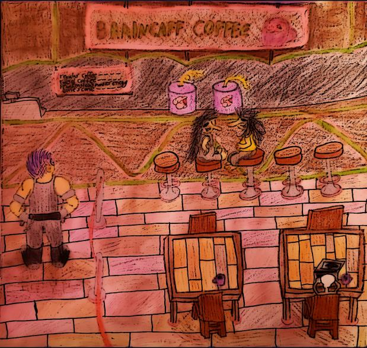

Hello! Let's explore the art behind the graphic adventure A Monstrous First Day of School.
If you'd like to play the game, you can download it here.
The people behind the creation of the game were Evan Duda, Reeanna Nyden, Kamen Petkov, and Jonte' Williams. The artist behind the visuals is Reeanna Nyden. They originally made the game as part of an assignment for a video game design class. They chose the graphic adventure as the genre as it was their favorite genre as they enjoy storytelling.
All of the art was hand drawn, scanned, then edited using picsart.
Welcome to the home page! This is what players will see when they boot up the game (minus the options of start game). Depicted is the school that your character will be attending. The school's sign features the world's language, Drakuzun (also created by Ms. Nyden). The cartoonish colors help to set the zaney tone of the story.
This is the local coffee shop, Braincaff Coffee, that all the hip college students love to go to. Which drink would you like to order?
This banner for AMDOS was not used as it was thought it would not attract players. However, it does feature the title of the game in the Drakuzun Language. Very exciting!
The game uses sound effects to add immersion and above is an example of one of the used sound effects.